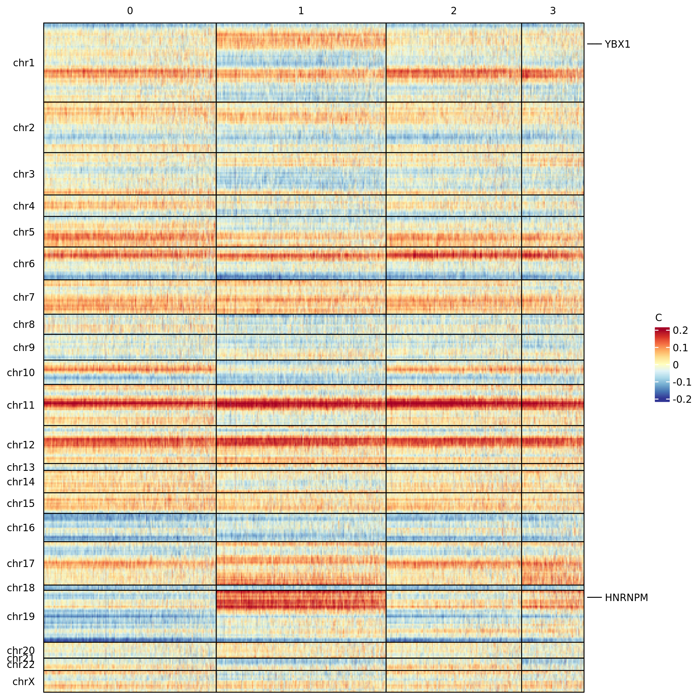
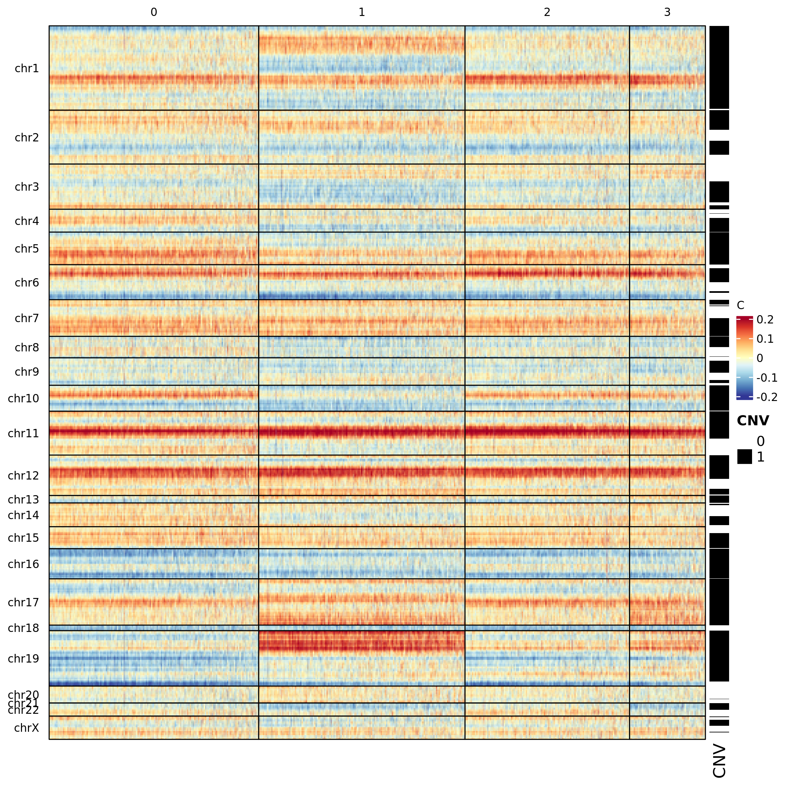
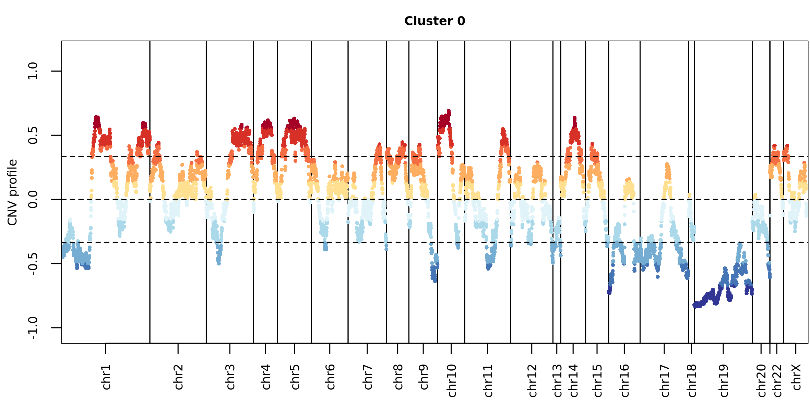
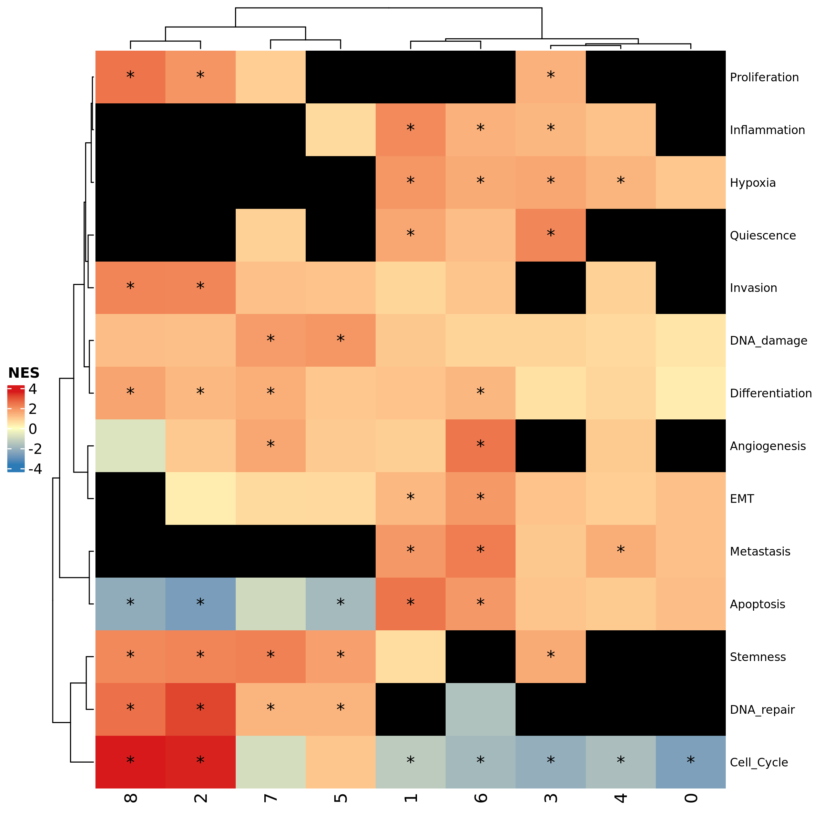
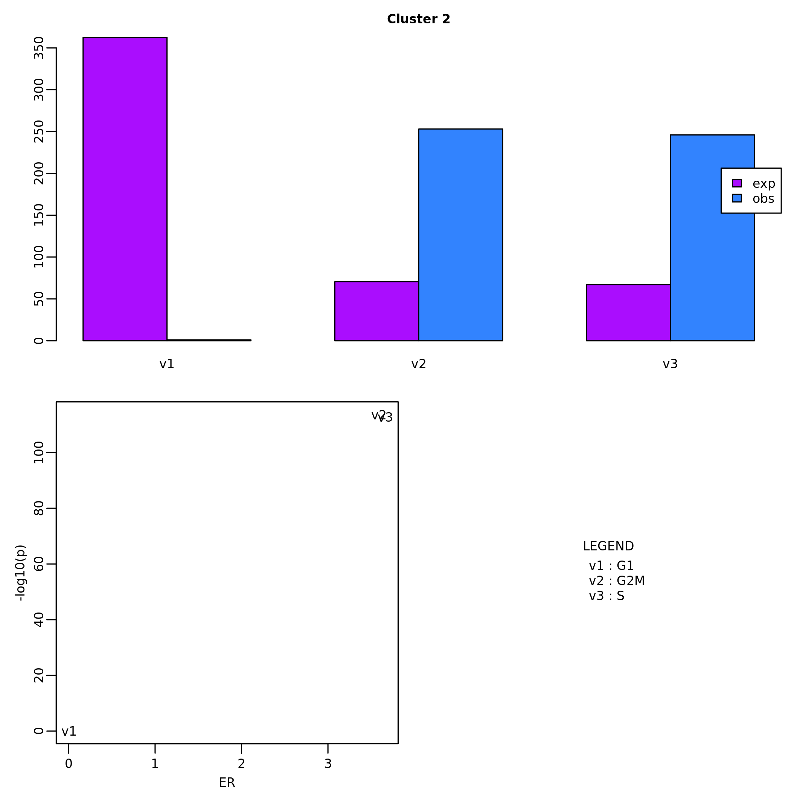
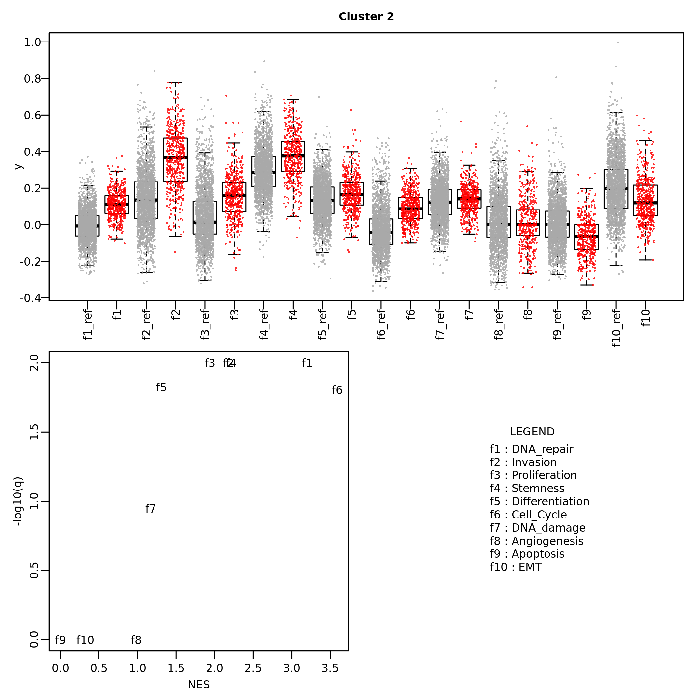

scMuffin package vignettes
scMuffin.Rmd
Installation
scMuffin requires R >= 4.0.0, due to some of its dependencies, like Seurat (Hao et al. 2021). R can be installed from CRAN at the URL https://cran.r-project.org/index.html.
To succesfully install scMuffin you need some packages from Bioconductor (https://bioconductor.org) and github (https://github.com/). These packages can be installed using the following commands:
if (!require("BiocManager", quietly = TRUE)){
install.packages("BiocManager")
}
BiocManager::install(c("BiocStyle", "ComplexHeatmap", "DESeq2", "org.Hs.eg.db"))
if (!require("devtools", quietly = TRUE)){
install.packages("devtools")
}
devtools::install_github("theislab/destiny")The other dependencies, if missing, should be automatically installed using the following command:
devtools::install_github("emosca-cnr/scMuffin", build_vignettes = TRUE)To load the package:
library(scMuffin)Input
scMuffin is intended to be used downstream general purpose tasks like quality control, normalization, cell clustering and dataset integration, for which there are dedicated tools, such as Seurat (Hao et al. 2021). scMuffin requires three inputs:
- genes-by-cells raw counts matrix;
- genes-by-cells normalized expression matrix;
- a partition of cells (cell clusters).
The rownames and colnames of the two matrices must be, respectively, gene identifiers and cell identifiers. Currently, we recommend to use official gene symbols. Some analysis, like CNV inference, works only with gene symbols.
Typically, the two genes-by-cells matrices have already been filtered to exclude low quality cells and genes that could negatively affect the analyses. However, the characterization of cells that can be achieved with scMuffin offers insights that can be used to (further) filter a dataset and/or to decide on which cells apply particular analyses (e.g. biomarker identification). In general, according to research questions and experimental design strong or mild filters should be applied before using scMuffin.
Obtaining the data used in this vignette
Here’s an example of how to obtain a publicly available single cell dataset from Gene Expression Omnibus (GEO). In particular, we will consider a sample from a study on High-Grade Glioma (J. Yuan et al. 2018) (GSE103224):
- download the filtered genes-by-cells mtrices from the URLs:
- read the text files into R and use the Seurat package (Hao et al. 2021) to perform a series of typical tasks (e.g. normalization, clustering); here’s a concise example using sample PJ016:
library(Seurat)
gbc_counts <- read.table("GSM2758471_PJ016.filtered.matrix.txt", stringsAsFactors = F)
sym <- gbc_counts[, "V2"]
gbc_counts[, c("V1", "V2")] <- NULL
gbc_counts <- keep_strongest_representative(genes_by_cells = gbc_counts, sym)
seu_obj_1 <- CreateSeuratObject(counts = gbc_counts, project = "PJ016",
min.cells = 100, min.features = 1000)
seu_obj_1[["pMito"]] <- PercentageFeatureSet(seu_obj_1, pattern = "^MT-")
seu_obj_1 <- subset(seu_obj_1, subset = nFeature_RNA > 200 &
nFeature_RNA < 8000 & nCount_RNA < 30000 & pMito < 10)
seu_obj_1 <- NormalizeData(seu_obj_1)
seu_obj_1 <- FindVariableFeatures(seu_obj_1, selection.method = "vst",
nfeatures = 2000)
seu_obj_1 <- ScaleData(seu_obj_1, features = rownames(seu_obj_1))
seu_obj_1 <- RunPCA(seu_obj_1, npcs = 10,
features = VariableFeatures(seu_obj_1))
seu_obj_1 <- FindNeighbors(seu_obj_1, dims = 1:10)
seu_obj_1 <- FindClusters(seu_obj_1)
seu_obj_1 <- RunUMAP(seu_obj_1, dims = 1:10)
seu_obj_1 <- CellCycleScoring(object = seu_obj_1,
g2m.features = cc.genes.updated.2019$g2m.genes,
s.features = cc.genes.updated.2019$s.genes)The genes-by-cells count matrix available at NCBI GEO is provided
with Ensembl identifiers and gene symbols, which are not unique. So,
after having read the table, we used the function
keep_strongest_representative, which defines a
genes-by-cells matrix with symbols as row names. In case of multiple
Ensembl ids mapped to the same symbol, the row with the highest average
count is kept as representative of the gene.
In a real scenario, the functions listed above should be run using appropriate parameter values that take into account the specificities of the dataset under consideration and the objectives of the analysis to perform. Here we just wanted to provide a means to obtain a dataset to follow this vignette. Please read the Seurat documentation for further details about the functions listed above.
The scMuffinList data structure
All data and results of scMuffin are stored in the scMuffinList, so that every function takes in input such structure and returns a modified version of it. The scMuffinList can be created as follows:
scML <- create_scMuffinList(counts = GetAssayData(seu_obj_1, assay = "RNA", slot = "counts"),
normalized = GetAssayData(seu_obj_1, assay = "RNA", slot = "data"))Many analyses require cell clusters. Any partition can be added as follows:
scML <- add_partitions(scML,
clusters = seu_obj_1$seurat_clusters,
partition_id = "global_expr")where seu_obj_1$seurat_clusters is a named vector that
contains cells clusters and whose names are cell labels. The element
partitions of scML will contain cell
clusters:
head(scML$partitions[, 1, drop = F])## global_expr
## V3 2
## V4 2
## V5 6
## V6 2
## V7 6
## V8 6The function add_features() can be used to add custom
results to the scMuffinList. In the following example we
add the cell cycle phase:
scML <- add_features(scML, name = "CC_Phase",
summary = cbind(CC_Phase = seu_obj_1$Phase))
head(scML$CC_Phase$summary)## CC_Phase
## V3 "G2M"
## V4 "S"
## V5 "G1"
## V6 "G2M"
## V7 "G1"
## V8 "G1"The summary element of the scMuffinList is a data.frame
intended to contain data about the feature, while element
full can be used to store other supporting feature data
(see other examples below).
Gene set scoring
scMuffin provides functions to set up one or more collections of gene sets and perform cell-level estimation of gene set expression in relation to an empirical null model. This can be applied to any gene set and can therefore be used to estimate various cells’ phenotypes, like pathway activities or markers expression.
Assembling input gene sets
The function prepare_gsls retrieves gene sets from
CellMarker (Zhang et al. 2019), PanglaoDB
(Franzén, Gan, and Björkegren 2019),
CancerSEA (H. Yuan et al. 2019) and MSigDB
(Subramanian et al. 2005), and accepts
custom gene set as well. The full list of gene sets available whitin
CellMarker, PanglaoDB and CancerSEA collections can be listed using:
while in the case of MSigDB we can use its dedicated functions:
msigdbr::msigdbr_collections()
msigdbr::msigdbr_species()The gene sets of interest can be selected acting on the corresponding
arguments CM_tissues, PNDB_tissues, and
msigdb_hs_cat_subcat. In the case of CellMarker and
PanglaoDB we can specify a list of desired tissues. The full set can be
listed by means of show_tissues. Here we show just the first part of the
output:
lapply(show_tissues(), head)## $PNDB
## [1] "Adrenal_glands" "Blood" "Bone"
## [4] "Brain" "Connective_tissue" "Embryo"
##
## $CM_normal
## [1] "Abdominal_adipose_tissue" "Adipose_tissue"
## [3] "Adrenal_gland" "Adventitia"
## [5] "Airway_epithelium" "Amniotic_fluid"
##
## $CM_cancer
## [1] "Adipose_tissue" "Ascites" "Bladder" "Blood"
## [5] "Blood_vessel" "Bone"Here is an example:
gsc <- prepare_gsls(gs_sources = c("CancerSEA", "PNDB"),
PNDB_tissues = c("Brain"),
scMuffinList = scML,
genes_min = 3)Note that in the case of MSigDB we have to set up a
data.frame to specify species, category and sub_category of
the gene set collections.
Calculate Gene set scores at cell and cluster level
In the following example, we estimate the scores for CancerSEA gene sets:
scML <- calculate_gs_scores(scMuffinList = scML,
gs_list = gsc$CancerSEA)The results of any analysis are stored as elements of the
scML. The gene set scoring engine stores its results in
scML$gene_set_scoring, where summary is a
cells-by-features data.frame with cell scores, and full
contains a series of additional details for every gene set:
## Angiogenesis Apoptosis Cell_Cycle Differentiation DNA_damage
## V3 -0.10918589 -0.027672315 0.14448128 0.2177449 0.10625520
## V4 -0.02872848 0.065879018 0.28261124 0.2546351 0.28273733
## V5 0.08863655 -0.003487231 -0.04785548 0.1568680 0.14740373
## V6 -0.10802785 -0.010414814 0.36535484 0.2201350 0.16137969
## V7 0.09552221 0.214845193 -0.13056901 0.1659778 0.01677083
## V8 0.14137853 0.267301590 -0.10286473 0.1054560 0.09103363
## DNA_repair EMT Hypoxia Inflammation Invasion Metastasis
## V3 0.148348585 0.05265334 0.09262748 0.009633798 0.3169777 0.2093022
## V4 0.181192508 0.13265908 0.12957070 0.050349840 0.5034789 0.2555932
## V5 -0.011344590 0.22409580 0.41523704 0.111271235 0.2040137 0.3528524
## V6 0.163828298 0.26049885 -0.03046142 0.005814202 0.5683223 0.1564824
## V7 -0.071774957 0.35638003 0.39819922 0.004184621 0.3586581 0.3512004
## V8 0.001900824 0.23221609 0.32485036 -0.015495107 0.2552769 0.4519555
## Proliferation Quiescence Stemness
## V3 0.19624494 -0.10718702 0.4275265
## V4 0.31782667 0.14023972 0.6338283
## V5 0.13657056 0.00557050 0.2942666
## V6 0.16174960 0.06201775 0.5979552
## V7 0.17320576 0.03903302 0.2387523
## V8 -0.03581073 0.07383093 0.2218311## case case.N case.AV nmark_min avg_control control.AV null_ok
## V3 0.6209460 40 21 TRUE 0.7301319 100 TRUE
## V4 0.7282336 40 20 TRUE 0.7569621 100 TRUE
## V5 0.8418314 40 23 TRUE 0.7531949 100 TRUE
## V6 0.6632416 40 16 TRUE 0.7712694 100 TRUE
## V7 0.8363020 40 23 TRUE 0.7407798 100 TRUE
## V8 0.8964932 40 19 TRUE 0.7551147 100 TRUE
## avg_delta_score delta_score
## V3 -0.10918589 -0.10918589
## V4 -0.02872848 -0.02872848
## V5 0.08863655 0.08863655
## V6 -0.10802785 -0.10802785
## V7 0.09552221 0.09552221
## V8 0.14137853 0.14137853The values of cell-level scores can be used to color UMAP visualizations, which are automatically generated for every gene set using:
plot_umap_colored_features(scMuffinList = scML,
Seu_obj = seu_obj_1,
feature_name = "gene_set_scoring")Here below, an example of UMAP visualization where cells are colored by CancerSEA “Hypoxia” gene set score.

caption
The function calculate_gs_scores_in_clusters defines the
median values of gene set scores in every cluster of a given partition
id:
scML <- calculate_gs_scores_in_clusters(scMuffinList = scML,
partition_id = "global_expr")
scML$cluster_data$global_expr$gene_set_scoring$summary## Angiogenesis Apoptosis Cell_Cycle Differentiation DNA_damage DNA_repair
## 0 0.005206236 0.019249002 -0.06447346 0.10079093 0.08386659 -0.015634375
## 1 0.022524297 0.052477813 -0.02173267 0.16058731 0.15353017 -0.016262480
## 2 0.016285304 -0.077046033 0.09287226 0.16931117 0.14490958 0.104084184
## 3 -0.011020301 -0.004544935 -0.06073645 0.09458853 0.11932908 -0.001509004
## 4 0.022337656 0.021403192 -0.04759109 0.14014722 0.12942893 -0.024110561
## 5 -0.031611017 -0.042869916 0.02839297 0.15244780 0.22201017 0.067711722
## 6 0.132965431 0.028446423 -0.05078115 0.17077833 0.11716633 -0.035208636
## 7 0.083809559 -0.027496365 0.01100746 0.15875134 0.20662126 0.027456269
## 8 0.009743315 -0.072038549 0.28456623 0.24816174 0.16453499 0.118506158
## EMT Hypoxia Inflammation Invasion Metastasis Proliferation
## 0 0.1958425 0.152775367 0.007683201 0.02659866 0.24715672 0.01822001
## 1 0.2445520 0.300890417 0.129862284 0.15558955 0.31501115 0.02251154
## 2 0.1556018 -0.011922956 -0.003003220 0.38545997 0.10925866 0.16892359
## 3 0.2323454 0.267548254 0.086860333 0.09265066 0.24611511 0.12064441
## 4 0.2101481 0.262389267 0.056573420 0.17563272 0.29081642 0.03197286
## 5 0.1895798 -0.046625305 0.028563842 0.20228425 0.06788279 0.03974853
## 6 0.3314966 0.287708428 0.080396645 0.20701318 0.37491821 -0.02531225
## 7 0.1290949 -0.044477324 -0.003007760 0.19486268 0.10988028 0.05104020
## 8 0.1226556 0.004651646 0.035257815 0.49988275 0.14005943 0.39134694
## Quiescence Stemness
## 0 -0.014092199 0.2370518
## 1 0.086151276 0.2942516
## 2 0.029009746 0.3854771
## 3 0.148241530 0.3829096
## 4 -0.003897101 0.2378097
## 5 -0.054270405 0.3662737
## 6 0.073751645 0.2388921
## 7 0.040777466 0.4215733
## 8 0.006650415 0.4348696These mean values are useful to obtain a concise visualization of
gene set expression throughout the dataset, using the function
plot_heatmap_features_by_clusters:
plot_heatmap_features_by_clusters(scMuffinList = scML,
feature_source = "gss")caption
CNV inference
CNV calculation
CNV inference is performed by the function
CNV_analysis.
scML <- CNV_analysis(scML)The results are stored in scML$CNV, where:
-
summarycontains the CNV score; -
scML$CNV$full$CNVcontains the regions-by-cells matrix of CNV profiles; -
scML$CNV$full$regions2genesis important to map the original data into the CNV regions; -
scML$CNV$full$detected_cnv_regionsis a data.frame that list the CNV regions detected in each chromosome and cell cluster:
head(scML$CNV$summary)
head(scML$CNV$full$CNV)
head(scML$CNV$full$regions2genes)
head(scML$CNV$full$detected_cnv_regions$chr1)## CNV_score
## V3 42.61237
## V4 49.29867
## V5 40.00239
## V6 45.42658
## V7 37.62340
## V8 45.69161## V3 V4
## chr1__826205__LINC00115__chr1__15807161__UQCRHL -0.09701447 -0.1335597
## chr1__827590__LINC01128__chr1__15834214__FLJ37453 -0.09701447 -0.1335597
## chr1__923922__SAMD11__chr1__15847706__SPEN -0.10029463 -0.1368559
## chr1__944202__NOC2L__chr1__15941868__ZBTB17 -0.10029463 -0.1291166
## chr1__998963__HES4__chr1__16246839__FBXO42 -0.10357480 -0.1233517
## chr1__1013496__ISG15__chr1__16367241__SZRD1 -0.10357480 -0.1208830
## V5 V6
## chr1__826205__LINC00115__chr1__15807161__UQCRHL -0.08801707 -0.08020141
## chr1__827590__LINC01128__chr1__15834214__FLJ37453 -0.08801707 -0.08020141
## chr1__923922__SAMD11__chr1__15847706__SPEN -0.08801707 -0.08020141
## chr1__944202__NOC2L__chr1__15941868__ZBTB17 -0.08801707 -0.07690028
## chr1__998963__HES4__chr1__16246839__FBXO42 -0.08801707 -0.08267282
## chr1__1013496__ISG15__chr1__16367241__SZRD1 -0.08801707 -0.07937168
## V7 V8
## chr1__826205__LINC00115__chr1__15807161__UQCRHL -0.09343743 -0.1312566
## chr1__827590__LINC01128__chr1__15834214__FLJ37453 -0.09013095 -0.1312566
## chr1__923922__SAMD11__chr1__15847706__SPEN -0.09013095 -0.1254576
## chr1__944202__NOC2L__chr1__15941868__ZBTB17 -0.09013095 -0.1221395
## chr1__998963__HES4__chr1__16246839__FBXO42 -0.09343743 -0.1188214
## chr1__1013496__ISG15__chr1__16367241__SZRD1 -0.09343743 -0.1155033
## V9 V10
## chr1__826205__LINC00115__chr1__15807161__UQCRHL -0.1363821 -0.1140620
## chr1__827590__LINC01128__chr1__15834214__FLJ37453 -0.1397023 -0.1140620
## chr1__923922__SAMD11__chr1__15847706__SPEN -0.1363821 -0.1106926
## chr1__944202__NOC2L__chr1__15941868__ZBTB17 -0.1363821 -0.1140620
## chr1__998963__HES4__chr1__16246839__FBXO42 -0.1363821 -0.1140620
## chr1__1013496__ISG15__chr1__16367241__SZRD1 -0.1363821 -0.1106926
## V11 V12
## chr1__826205__LINC00115__chr1__15807161__UQCRHL 0.03868385 -0.08410502
## chr1__827590__LINC01128__chr1__15834214__FLJ37453 0.04206464 -0.08410502
## chr1__923922__SAMD11__chr1__15847706__SPEN 0.04796102 -0.08410502
## chr1__944202__NOC2L__chr1__15941868__ZBTB17 0.05385741 -0.08067802
## chr1__998963__HES4__chr1__16246839__FBXO42 0.05637300 -0.08067802
## chr1__1013496__ISG15__chr1__16367241__SZRD1 0.05975379 -0.07471005## $chr1__826205__LINC00115__chr1__15807161__UQCRHL
## chr pos symbol
## X11.1 chr1 826205 LINC00115
## X12.1 chr1 827590 LINC01128
## X13.1 chr1 923922 SAMD11
## X14.1 chr1 944202 NOC2L
## X15.1 chr1 998963 HES4
## X16.1 chr1 1013496 ISG15
## X17.1 chr1 1216930 SDF4
## X18.1 chr1 1232236 B3GALT6
## X19.1 chr1 1253911 UBE2J2
## X110.1 chr1 1280435 SCNN1D
## X111.1 chr1 1292390 ACAP3
## X112.1 chr1 1308579 PUSL1
## X113.1 chr1 1324801 CPTP
## X114.1 chr1 1335277 DVL1
## X115.1 chr1 1352688 MXRA8
## X116.1 chr1 1373735 AURKAIP1
## X117.1 chr1 1385710 CCNL2
## X118.1 chr1 1401908 MRPL20
## X119.1 chr1 1449688 ATAD3C
## X120.1 chr1 1471764 ATAD3B
## X121.1 chr1 1512161 ATAD3A
## X122.1 chr1 1534777 TMEM240
## X123.1 chr1 1541672 SSU72
## X124.1 chr1 1615854 MIB2
## X125.1 chr1 1635224 CDK11B
## X126.1 chr1 1661477 SLC35E2B
## X127.1 chr1 1751231 NADK
## X128.1 chr1 1785284 GNB1
## X129.1 chr1 2189548 FAAP20
## X130.1 chr1 2228318 SKI
## X131.1 chr1 2391840 RER1
## X132.1 chr1 2403973 PEX10
## X133.1 chr1 2508536 PANK4
## X134.1 chr1 2528744 HES5
## X135.1 chr1 2556364 TNFRSF14
## X136.1 chr1 3625014 TPRG1L
## X137.1 chr1 3630769 WRAP73
## X138.1 chr1 3778558 LRRC47
## X139.1 chr1 3812085 CEP104
## X140.1 chr1 3889132 C1orf174
## X141.1 chr1 6185019 RPL22
## X142.1 chr1 6221192 ICMT
## X143.1 chr1 6247352 GPR153
## X144.1 chr1 6264271 ACOT7
## X145.1 chr1 6460785 TNFRSF25
## X146.1 chr1 6467121 PLEKHG5
## X147.1 chr1 6521346 NOL9
## X148.1 chr1 6579993 ZBTB48
## X149.1 chr1 6590723 KLHL21
## X150.1 chr1 6613730 PHF13
## X151.1 chr1 6625149 THAP3
## X152.1 chr1 6634169 DNAJC11
## X153.1 chr1 6785453 CAMTA1
## X154.1 chr1 7771295 VAMP3
## X155.1 chr1 7784428 PER3
## X156.1 chr1 7961710 PARK7
## X157.1 chr1 8011726 ERRFI1
## X158.1 chr1 8352403 RERE
## X159.1 chr1 8860999 ENO1
## X160.1 chr1 9148010 MIR34AHG
## X161.1 chr1 9234773 H6PD
## X162.1 chr1 9292893 SPSB1
## X163.1 chr1 9539464 SLC25A33
## X164.1 chr1 9588910 TMEM201
## X165.1 chr1 9728925 CLSTN1
## X166.1 chr1 9848275 CTNNBIP1
## X167.1 chr1 9922117 LZIC
## X168.1 chr1 9942922 NMNAT1
## X169.1 chr1 10032957 UBE4B
## X170.1 chr1 10210705 KIF1B
## X171.1 chr1 10399063 PGD
## X172.1 chr1 10460545 DFFA
## X173.1 chr1 10474949 PEX14
## X174.1 chr1 10647210 CASZ1
## X175.1 chr1 11012653 TARDBP
## X176.1 chr1 11054589 SRM
## X177.1 chr1 11066618 EXOSC10
## X178.1 chr1 11106534 MTOR
## X179.1 chr1 11273197 UBIAD1
## X180.1 chr1 11654406 FBXO44
## X181.1 chr1 11674479 MAD2L2
## X182.1 chr1 11691709 DRAXIN
## X183.1 chr1 11736084 AGTRAP
## X184.1 chr1 11785725 MTHFR
## X185.1 chr1 11806095 CLCN6
## X186.1 chr1 11845709 NPPA
## X187.1 chr1 11919590 KIAA2013
## X188.1 chr1 11934716 PLOD1
## X189.1 chr1 11980443 MFN2
## X190.1 chr1 12019497 MIIP
## X191.1 chr1 12230029 VPS13D
## X192.1 chr1 12567909 DHRS3
## X193.1 chr1 13749414 PRDM2
## X194.1 chr1 14945918 KAZN
## X195.1 chr1 15409887 EFHD2
## X196.1 chr1 15491400 CASP9
## X197.1 chr1 15526847 DNAJC16
## X198.1 chr1 15617457 DDI2
## X199.1 chr1 15684319 PLEKHM2
## X1100 chr1 15758794 FBLIM1
## X1101 chr1 15807161 UQCRHL## chr start start.loc
## 1 chr1 chr1__826205__LINC00115__chr1__15807161__UQCRHL 826205
## 3 chr1 chr1__113929323__HIPK1__chr1__153633981__CHTOP 113929323
## 5 chr1 chr1__169132530__NME7__chr1__203127725__ADORA1 169132530
## 6 chr1 chr1__826205__LINC00115__chr1__15807161__UQCRHL 826205
## 35 chr1 chr1__826205__LINC00115__chr1__15807161__UQCRHL 826205
## 38 chr1 chr1__93180715__CCDC18__chr1__144887287__SRGAP2B 93180715
## stop stop.loc cluster length
## 1 chr1__9588910__TMEM201__chr1__25884178__STMN1 25884178 0 25057973
## 3 chr1__153990761__RPS27__chr1__162497804__UHMK1 162497804 0 48568481
## 5 chr1__169792531__METTL18__chr1__203305518__BTG2 203305518 0 34172988
## 6 chr1__213988532__PROX1__chr1__244653125__DESI2 244653125 1 243826920
## 35 chr1__9234773__H6PD__chr1__25616790__MAN1C1 25616790 2 24790585
## 38 chr1__154161812__TPM3__chr1__162561898__UAP1 162561898 2 69381183Importantly, CNV inference adds the “CNV” partition:
head(scML$partitions)## global_expr CNV
## V3 2 1
## V4 2 1
## V5 6 0
## V6 2 1
## V7 6 0
## V8 6 2The calculation can be demanding. For example, it requires approximately 10 minutes on 2 cores (dual Intel(R) Xeon(R), 2.60GHz).
CNV visualization
scMuffin provides two visualizations for CNVs: an heatmap and the
cluster average profile plot. The heatmap is based on ComnplexHeatmap
package and enables the visualization of the genomic location of a
series of given genes (specified in the argument genes),
or, alternatively, the location of detected CNVs (argument
mark.detected.cnv = T)
col_fun <- circlize::colorRamp2(seq(-0.2, 0.2, length.out = 11),
rev(pals::brewer.rdylbu(11)))
heatmap_CNV(scMuffinList = scML,
genes = c("YBX1", "HNRNPM"),
genes.labels = T,
col = col_fun)
heatmap_CNV(scMuffinList = scML, mark.detected.cnv = T, col=col_fun)
The function plot_profile_CNV plots the median CNV
profile of a cluster:
plot_profile_CNV(scMuffinList = scML, cluster = 0, cex.points = 0.5) 
Transcriptional complexity
The transcriptional complexity (TC) can be quantified by means of the
function transcr_compl. The corresponding summary element
contains a data.frame with the number of cell transcripts,
the number of genes detected in every cell, the TC-ratio (C), the TC-LMR
(linear model residual) and the TC-H (entropy):
scML <- transcr_compl(scML)
head(scML$transcr_compl$summary)## tot_counts n_genes C H LM
## V3 16228 1051 0.8628900 6.522372 -0.02561130
## V4 14286 1168 1.0893060 6.736431 0.06164645
## V5 15857 1217 1.0225564 6.602594 0.04559174
## V6 15157 1208 1.0618701 6.763307 0.05703916
## V7 15609 1171 0.9995385 6.535546 0.03398037
## V8 15286 1218 1.0616250 6.685640 0.05786558Cell proliferation rate
Cell proliferation is quantified considering the maximum between the two scores of G1/S and G2/M gene sets:
scML <- proliferation_analysis(scMuffinList = scML)The proliferation score is stored in the summary element
of scML$proliferation:
head(scML$proliferation$summary)## Proliferation_score
## V3 0.22333804
## V4 0.48095696
## V5 -0.21546692
## V6 0.33213053
## V7 -0.08829706
## V8 -0.11826046Cell state trajectories
Diffusion maps identify differentiation trajectories. scMuffin relies on the diffusion pseudo time calculation available in the R package “destiny” (Angerer et al. 2016). Here we calculate the diffusion map over the first 50 PC (to speed up computation), using a random cell to obtain diffusion pseudotimes:
scML <- diff_map(scML,
root_cell = "random",
n_pcs = 50)A data.frame with the most important features of the analysis (the
first two eigenvectors, pseudotime, branch information and whether a
cell is a tip of the branch or not) are stored
scML$diffusion_map_pseudo_t$summary:
scML$diffusion_map_pseudo_t$summary## DC1 DC2 dpt branch tips
## V3 0.02440015 0.027054071 1.3328347 NA FALSE
## V4 0.03072120 0.038239911 1.4752607 2 FALSE
## V5 -0.01926577 0.005752026 0.3735439 1 FALSE
## V6 0.03191479 0.047083928 1.5085980 2 FALSE
## V7 -0.01855966 0.004971247 0.3738625 1 FALSE
## V8 -0.01856063 0.005047917 0.3926285 1 FALSEThe full DPT object from destiny is stored in the element
scML$diffusion_map_pseudo_t$full. This allows the user to
take advantage of destiny functions, such as
plot(), e.g.
destiny::plot(scML$diffusion_map_pseudo_t$full, col_by = 'branch')The function plot_diff_map() visualizes a diffusion map
where cells are colored by any other set of cell-level values. In the
following example we plot the diffusion map colored by CNV-based cell
clusters:
plot_diff_map(scMuffinList = scML,
col_data = setNames(scML$partitions$CNV, rownames(scML$partitions)))
Cluster enrichment assessment
Cell clusters can be assessed for enrichment in quantitative and
categorical values. The appropriate statistical test is automatically
chosen according to feature type. In this example, we assess cluster
enrichment for the feature gene_set_scoring (quantitative
one) for the cluster defined by the partition
global_expr:
scML <- assess_cluster_enrichment(scML,
feature_name = "gene_set_scoring",
partition_id = "global_expr")In case of quantitative features the result is a list named CSEA,
placed under the elements cluster_data$global_expr
(partition id). The list contains the gene set table and the leading
edge results. Here’s the result related to the gene set
Angiogenesis:
scML$cluster_data$global_expr$CSEA$Angiogenesis## id size es nes nperm p_val adj_p_val q_val FDRq
## 1 0 588 -0.1912822 NA 2 NA NA NA NA
## 2 1 538 0.1957418 0.8894305 95 0.80000000 0.93333333 NA 0.80000000
## 3 2 500 0.2160336 0.9846048 94 0.56382979 0.78936170 NA 1.00000000
## 4 3 331 -0.3133212 NA 7 NA NA NA NA
## 5 4 257 0.2206047 0.9748262 89 0.48314607 0.78936170 NA 0.78624535
## 6 5 186 0.2309628 0.9659241 81 0.53086420 0.78936170 NA 0.66022305
## 7 6 176 0.6179953 2.4796553 83 0.01204819 0.07954545 NA 0.01204819
## 8 7 140 0.4205973 1.6200568 88 0.02272727 0.07954545 NA 0.02272727
## 9 8 115 -0.1547180 -0.7373612 14 1.00000000 1.00000000 NA 1.00000000
## tags tags_perc list_top list_top_perc lead_edge
## 1 123 0.2525667 505 0.2056189 0.2502578
## 2 95 0.1779026 477 0.1942182 0.1831786
## 3 62 0.1593830 334 0.1359935 0.1636240
## 4 95 0.3356890 503 0.2048046 0.3017030
## 5 85 0.3333333 768 0.3127036 0.2556414
## 6 23 0.1729323 387 0.1575733 0.1540237
## 7 107 0.6079545 633 0.2577362 0.4860970
## 8 37 0.3700000 676 0.2752443 0.2795416
## 9 31 0.3131313 662 0.2695440 0.2383358In this this example, we assess cluster enrichment in relation to the
categorical feature CC_Phase, namely the cell cycle phase
calculated by means of Seurat function CellCycleScoring()
and added to scML by means of add_features()
(see above):
scML <- assess_cluster_enrichment(scML,
feature_name = "CC_Phase",
partition_id = "global_expr")As for categorical features the result is a list named ORA, placed
under the elements cluster_data$global_expr (partition id).
The list contains ORA results for every categorical value. Here’s the
enrichment of clusters in terms of cells with value “G1”:
scML$cluster_data$global_expr$ORA$CC_Phase$G1## id N wb bb bd wbd exp er p p_adj
## 0 0 2831 2056 775 588 547 427.03214 1.280934 4.898697e-43 2.204414e-42
## 1 1 2831 2056 775 538 516 390.71989 1.320639 4.370181e-53 3.933163e-52
## 2 2 2831 2056 775 500 0 363.12257 0.000000 1.000000e+00 1.000000e+00
## 3 3 2831 2056 775 331 299 240.38714 1.243827 4.638303e-17 8.348946e-17
## 4 4 2831 2056 775 257 255 186.64500 1.366230 1.095704e-34 3.287111e-34
## 5 5 2831 2056 775 186 148 135.08160 1.095634 1.546645e-02 1.988543e-02
## 6 6 2831 2056 775 176 174 127.81915 1.361298 1.102600e-22 2.480850e-22
## 7 7 2831 2056 775 140 117 101.67432 1.150733 1.320545e-03 1.980817e-03
## 8 8 2831 2056 775 115 0 83.51819 0.000000 1.000000e+00 1.000000e+00The enrichment analysis results appearing in these tables can be
easily extracted and organized in a clusters-by-values table by means of
extract_cluster_enrichment_table. For instance, here we
extract CSEA NES and FDRq values, and ORA er (enrichment ratio)
values:
csea_fdr_table <- extract_cluster_enrichment_table(scML,
partition_id = "global_expr",
type = "CSEA",
quantity = "FDRq")
csea_nes_table <- extract_cluster_enrichment_table(scML,
partition_id = "global_expr",
type = "CSEA",
quantity = "nes")
ora_p_table <- extract_cluster_enrichment_table(scML,
partition_id = "global_expr",
type = "ORA",
quantity = "p")
csea_fdr_table## Angiogenesis
## 0 NA
## 1 0.80000000
## 2 1.00000000
## 3 NA
## 4 0.78624535
## 5 0.66022305
## 6 0.01204819
## 7 0.02272727
## 8 1.00000000These tables can be plotted with the function
plot_heatmap_features_by_clusters. In the following example
we plot NES values with asterisks according to their significance:
plot_heatmap_features_by_clusters(feature_source = csea_nes_table,
significance_matrix = csea_fdr_table,
sig_threshold = 0.05)
Similarly, it’s possible to extract the most significant “tags” of any clusters; for example, here we extract the top 3 tags by FDRq (CSEA) and p_adj (ORA):
scML <- extract_cluster_enrichment_tags(scML,
partition_id = "global_expr",
n_max_per_cluster = 3,
CSEA_selection_criterion = "FDRq",
only_pos_nes = TRUE,
CSEA_selection_threshold = 0.05,
ORA_selection_criterion = "p_adj",
ORA_selection_threshold = 0.25)The results are placed under the cluster_tags
element:
head(scML$cluster_data$global_expr$cluster_tags$CSEA)## $`0`
## [1] "Cell_Cycle"
##
## $`1`
## [1] "Hypoxia" "Inflammation" "Metastasis"
##
## $`2`
## [1] "DNA_repair" "Invasion" "Proliferation"
##
## $`3`
## [1] "Hypoxia" "Proliferation" "Quiescence"
##
## $`4`
## [1] "Hypoxia" "Metastasis" "Cell_Cycle"
##
## $`5`
## [1] "DNA_damage" "Stemness" "DNA_repair"The results of cluster enrichment can be visualized by barplots and boxplots for, respectively, categorical values and quantitative values.
barplot_cluster(scML,
partition_id = "global_expr",
feature_name = "CC_Phase",
feature_id = "CC_Phase")
boxplot_cluster(scML,
feature_name = "gene_set_scoring",
partition_id = "global_expr")
Comparison between clusters
Intra-dataset
The function overlap_matrix calculates the overlap
coefficient between all-pairs of clusters of two or more partitions of
the same cells (same dataset):
scML <- overlap_matrix(scML)The results are stored under the element `cluster_comparison```:
head(scML$cluster_comparison$overlap_matrix)## CNV_0 CNV_1 CNV_2 CNV_3 global_expr_0
## CNV_0 1.0000000 0.000000000 0.0000000 0.00000000 0.389455782
## CNV_1 0.0000000 1.000000000 0.0000000 0.00000000 0.005102041
## CNV_2 0.0000000 0.000000000 1.0000000 0.00000000 0.559523810
## CNV_3 0.0000000 0.000000000 0.0000000 1.00000000 0.082568807
## global_expr_0 0.3894558 0.005102041 0.5595238 0.08256881 1.000000000
## global_expr_1 0.6115242 0.000000000 0.3401487 0.07951070 0.000000000
## global_expr_1 global_expr_2 global_expr_3 global_expr_4
## CNV_0 0.6115242 0.00400000 0.12688822 0.665369650
## CNV_1 0.0000000 0.97800000 0.05740181 0.000000000
## CNV_2 0.3401487 0.00600000 0.17824773 0.326848249
## CNV_3 0.0795107 0.01834862 0.64525994 0.007782101
## global_expr_0 0.0000000 0.00000000 0.00000000 0.000000000
## global_expr_1 1.0000000 0.00000000 0.00000000 0.000000000
## global_expr_5 global_expr_6 global_expr_7 global_expr_8
## CNV_0 0.00000000 0.7386364 0.007142857 0.000000000
## CNV_1 0.79569892 0.0000000 0.850000000 0.973913043
## CNV_2 0.02150538 0.2613636 0.007142857 0.008695652
## CNV_3 0.18279570 0.0000000 0.135714286 0.017391304
## global_expr_0 0.00000000 0.0000000 0.000000000 0.000000000
## global_expr_1 0.00000000 0.0000000 0.000000000 0.000000000Inter-dataset
Inter-dataset comparison is performed through the function
inter_dataset_comparison, which require a list of Seurat
objects and a gene set list. The activity of this gene set list will be
assessed over the clusters of all datasets. In needed, the function
prepare_cluster_markers_list provides the possibility to
prepare a gene set list of cluster markers, starting
dataset_cmp_res <- inter_dataset_comparison(seu_obj_list = seu_obj_list,
gsl = cluster_markers_list,
genes_max = 500, genes_min = 5)
plot_heatmap_dataset_comparison(dataset_cmp_res,
outfile = "heatmap_ds_cmp.png")
plot_heatmap_dataset_comparison(dataset_cmp_res,
outfile = "heatmap_ds_cmp_p.png",
type = "significance")

The function can be used to analyze any gene set. In the following example we assess the expression of CancerSEA gene sets across datasets:
gsl <- prepare_gsls(gs_sources = "CancerSEA",
genes = unlist(lapply(seu_obj_list, rownames)))
dataset_cmp_res_cancersea <- inter_dataset_comparison(seu_obj_list = seu_obj_list,
gsl = gsl$CancerSEA,
genes_max = 500,
genes_min = 5)
plot_heatmap_dataset_comparison(dataset_cmp_res_cancersea,
outfile = "heatmap_ds_cmp_cancer.png")
caption